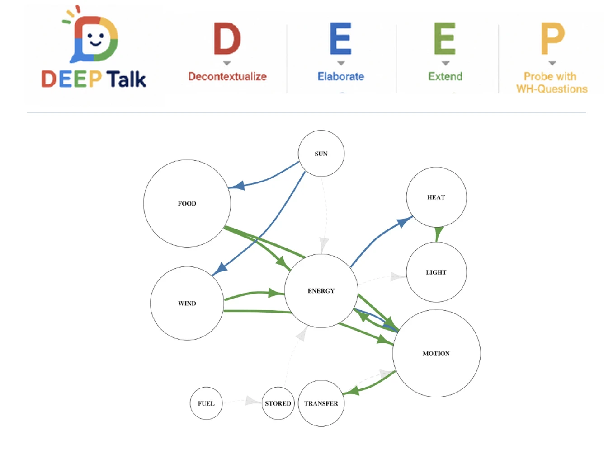
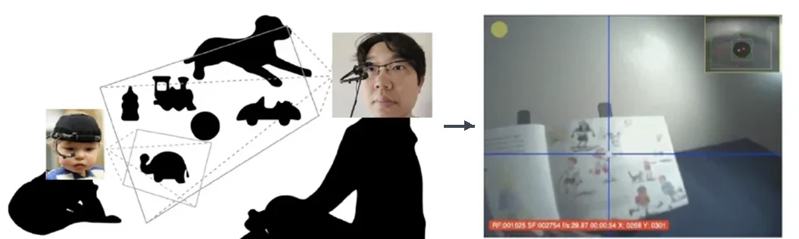
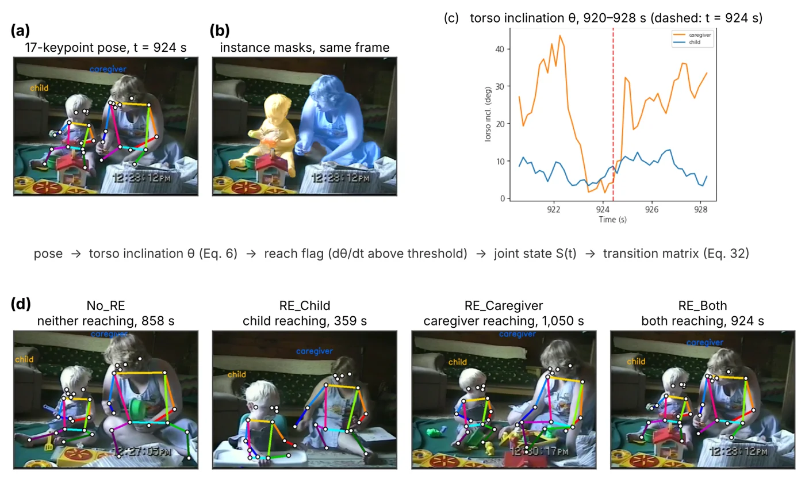
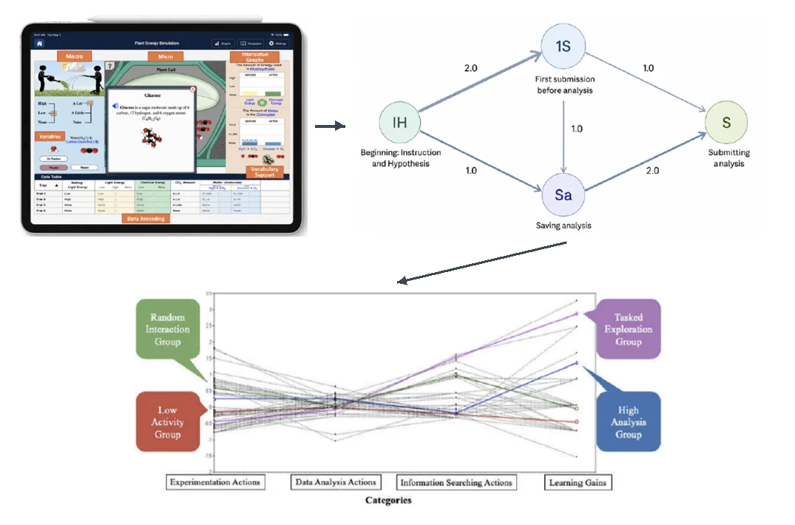

MOSAIC Lab
Multimodal Observation of Situated Activity, Interaction, and Child Learning
Assistant Professor · Jeannine Rainbolt College of Education · University of Oklahoma
Making visible the meaning children make every day, and building human-centered AI that helps adults notice and respond to it.
MOSAIC Lab brings together early literacies, human development and education, and human-centered, multimodal AI. We study how children from birth through Grade 3 learn and grow through teaching, relationships, play, and everyday experiences at home, in classrooms, in libraries, and in communities. Mixed methods connect computational patterns with observation and the interpretations of teachers and families, asking whose practices become visible and building tools that support, rather than replace, human judgment.
Approach
Learning is multimodal, situated, and social
People make meaning through talk, gesture, gaze, movement, images, objects, and digital tools at once, within culturally and socially organized contexts. In early literacies this is especially vivid: children read the world long before they read print. Our methods are built to see all of these modes together.
Multimodal meaning-making
Drawing on social semiotics, we develop AI-enabled multimodal fusion models that integrate video, audio, text, interaction logs, eye tracking, and sensor data to examine how meaning-making unfolds in real time.
Tools that support judgment
Grounded in critical big data and sociotechnical perspectives, we build tools that help teachers, families, and librarians notice and respond to children's diverse literacy practices in ways that expand participation, belonging, and agency, not tools that automate decisions.
Homes, schools, and libraries as information hubs
Families, teachers, librarians, and community partners join as co-researchers, positioning homes, schools, and libraries as interconnected hubs for learning, public engagement, and policy-relevant research.
Critical, human-centered AI
AI that helps people see, not AI that decides
Methodological innovation, for us, is also a way to question how evidence about children is produced. These commitments shape every model we build.
Questioning what gets recorded and auditing for bias
Data are never neutral. We examine how constructs are defined and whose language and participation are recognized, test performance across home languages, genders, disabilities, and settings, and audit generative AI for disciplinary and cultural bias.
People interpret; models flag uncertainty
Teachers, families, and librarians review model outputs alongside the video and context. Models report calibrated uncertainty and abstain when evidence is weak, sending ambiguous moments back to human judgment.
Interpretable, private, and low-stakes
Measures are grounded in theory and built baseline-first. Child data stay on secure systems, and outputs support understanding, never diagnosing children, ranking families, or evaluating teachers.
“The child has a hundred languages.”
Loris Malaguzzi
Theory
Bringing theory into view
Three perspectives guide the work: development is relational, it is dynamic, and meaning is made across many modes through tools and data shaped by people. Multimodal AI and dynamic modeling make the first two observable; social semiotics and a sociotechnical, human-centered view of AI keep the third in view.
Proximal processes, measured in time
Development is driven by reciprocal exchanges between a child and the people closest to them, nested in family, program, and community contexts and unfolding in microtime, mesotime, and macrotime.
- Process Proximal processes, the regular back-and-forth of shared reading, play, and care, are the engines of development.
- Person Children bring their own temperament, language, and interests, and shape how adults respond.
- Context Homes, early learning programs, libraries, and communities set what opportunities are available.
- Time Moments add up to routines, and routines to developmental trajectories.
Innovation Proximal processes have long been central to theory but hard to observe at scale. Multimodal data make them visible in everyday settings, so theory about relationships and context can be examined directly, complementing established observational measures.
In our work Relationships with caregivers, teachers, and peers, studied across homes, early learning programs, and communities, and over time.
Coupling, stability, and change
Behavior self-organizes from many interacting parts. Relationships settle into stable patterns, attractor states, and reorganize through periods of variability.
- Coupling Each partner's behavior constrains the other's, so the dyad, not the individual, is the unit of analysis.
- Attractors Over sessions, interactions settle into recurring patterns such as shared focus, responsiveness, or more independent activity.
- Variability Periods of instability are not noise; they often signal reorganization and openings for change.
- Timescales Real-time exchanges and long-term development shape each other.
Innovation Development is studied as a process that unfolds over time. Dense multimodal data let ideas about coupling, stability, and change be tested in real interactions, linking moment-to-moment experience to longer-term growth.
In our work How caregiver–child and teacher–child interactions take shape, settle into patterns, and change, in movement, attention, and conversation.
Many modes of meaning, read with people
Children make meaning through talk, gaze, gesture, images, and objects at once, and social semiotics treats each mode as a resource for meaning. A sociotechnical view adds that data and models are shaped by human choices about what to record and whose practices count.
- Modes Talk, gaze, gesture, images, movement, and objects each carry meaning, and children combine them before they read print.
- Design Every text, interface, and AI output is a designed sign that makes some meanings easier to see than others.
- Sociotechnical Data, models, and tools reflect choices about what to record, how to define constructs, and whose language counts.
- Human-centered AI supports, rather than replaces, the judgment of teachers, families, and librarians.
Innovation Brings a critical, meaning-centered perspective into the design of AI itself, so that multimodal tools recognize the many ways children communicate and remain accountable to the people and communities they serve.
In our work Language, media, and AI in children's lives, and tools for understanding them co-designed with educators, families, and librarians.
Explore by modality
Every data stream is a window into human interaction
Video, audio, language, eye tracking, digital traces, and longitudinal data each capture a different side of how people attend, communicate, construct meaning, and shape one another over time, and whose experiences become visible in data. Choose one to see the full analysis, findings, and papers.

Language & literacy · knowledge graphsConversation as evidence of literacy learningTalk around books, stories, and everyday experiences builds the oral language, vocabulary, and knowledge that children draw on as they learn to read and write. DEEP Talk uses directed knowledge graphs to show how ideas connect, who introduces them, how adults respond, and how questions and elaborations lead to sustained conversation.ContributionTreats the quality, sequence, and reciprocity of talk as authentic evidence of developing vocabulary, inferencing, narrative skills, and language comprehension, with implications for dialogic reading, family-centered language supports, and early reading intervention.InnovationDirected, agent-aware knowledge graphs that record who introduced each idea, how it was prompted, and whether it was taken up, complementing established language and early literacy measures.Explore →D · DecontextualizeTalk that moves beyond the here and now, to past events, the future, and abstract ideasE · ElaborateAdding detail, description, and explanation to an idea already on the tableE · ExtendBuilding on the child's idea to connect it to new conceptsP · ProbeOpen what, why, and how questions that invite the child to reasonReading the graphBigger circles are more child-led. Green: child's idea; blue: shared; gray: adult's. Solid: open prompt; dashed: closed. Faded: not taken up. Arrows show direction. Global quality · evidence-based assessmentComprehensive views of learning environmentsFrom overall classroom quality to the language children hear and each child's developing skills, established assessment tools such as ECERS-3, QCIT, ELLCO, and LISn give a comprehensive picture of children's language and literacy learning environments.ContributionCo-authored guide to analyzing and interpreting ECERS-3 data, and research linking program, classroom, and language environment quality to children's language and literacy.InnovationConnects global quality, language-focused observation, individual assessment, and fine-grained computational analysis so each level informs the others.Explore →Global qualityECERS-3 and CLASS, and QCIT for infant and toddler settingsLanguage & literacy environmentsELLCO for classroom language and literacy, and LISn, an individualized, child-focused toolIndividual childrenEvidence-based language and literacy assessments from infancy and toddlerhood through early childhoodGranular interactionDEEP Talk knowledge graphs of turn-by-turn talk
Global quality · evidence-based assessmentComprehensive views of learning environmentsFrom overall classroom quality to the language children hear and each child's developing skills, established assessment tools such as ECERS-3, QCIT, ELLCO, and LISn give a comprehensive picture of children's language and literacy learning environments.ContributionCo-authored guide to analyzing and interpreting ECERS-3 data, and research linking program, classroom, and language environment quality to children's language and literacy.InnovationConnects global quality, language-focused observation, individual assessment, and fine-grained computational analysis so each level informs the others.Explore →Global qualityECERS-3 and CLASS, and QCIT for infant and toddler settingsLanguage & literacy environmentsELLCO for classroom language and literacy, and LISn, an individualized, child-focused toolIndividual childrenEvidence-based language and literacy assessments from infancy and toddlerhood through early childhoodGranular interactionDEEP Talk knowledge graphs of turn-by-turn talk
Gaze · eye trackingAttention, comprehension, and representationChildren read pictures long before print. Dual eye tracking shows how they allocate and sustain attention, share attention with an adult, link what they hear to what they see, and integrate pictures and print to understand a story, and how representation in books shapes what they notice.ContributionConnects how children are represented in media to the attention they actually give, linking identity development with the materials adults choose for them.InnovationDual head-mounted eye tracking records child and adult gaze together, during natural shared reading.Explore →Dual trackingChild and adult each wear a head-mounted eye trackerScene mappingGaze is placed on the scene camera, frame by frameFixationsThe gaze stream is split into fixations and saccades on charactersFirst looksHeatmaps show where attention lands first and for how long Generative AI · digital literaciesAI as a cultural institutionLanguage models now write reading passages and lessons for young children, making AI part of their literacy environment. PLACE-AI audits whose knowledge these texts carry and builds the digital and critical literacies teachers and children need to question them.ContributionAn approach for auditing AI-generated content for children that centers place, culture, and community, and that supports critical digital literacies for educators and families.InnovationA controlled audit with selective classification: the model abstains when evidence is weak, so estimates rest on clear cases.Explore →GeneratePrompt a model under four conditions, from topic-only to integrated place-basedEncodeSplit outputs into units and embed each with a transformerRetrieveCompare each unit with STEM and social studies prototypesDecide or abstainLabel only clear, relevant units; set uncertain ones asideMeasureDisciplinary balance, sequences, and semantic neighborhoods
Generative AI · digital literaciesAI as a cultural institutionLanguage models now write reading passages and lessons for young children, making AI part of their literacy environment. PLACE-AI audits whose knowledge these texts carry and builds the digital and critical literacies teachers and children need to question them.ContributionAn approach for auditing AI-generated content for children that centers place, culture, and community, and that supports critical digital literacies for educators and families.InnovationA controlled audit with selective classification: the model abstains when evidence is weak, so estimates rest on clear cases.Explore →GeneratePrompt a model under four conditions, from topic-only to integrated place-basedEncodeSplit outputs into units and embed each with a transformerRetrieveCompare each unit with STEM and social studies prototypesDecide or abstainLabel only clear, relevant units; set uncertain ones asideMeasureDisciplinary balance, sequences, and semantic neighborhoods
Video & pose · computer visionCloseness, posture, and who leads in family lifeOrdinary home video becomes a second-by-second record of the caregiver–child relationship: how close they stay, how each leans in or away, and whose movement shapes the other's.ContributionA scalable, non-invasive way to measure caregiver–child closeness and mutual influence from everyday video, opening proximal processes and dyadic dynamics to large-scale, naturalistic study.InnovationMarkerless pose estimation feeds a dependency profile that combines linear, nonlinear, rhythmic, and event-based measures, each tested against shuffled timing. No wearable sensors or lab setting needed.Explore →Detect & trackYOLO11-pose finds caregiver and child; ByteTrack keeps their identities stableKeypoints17 joints per person, every frame of ordinary home videoDistance & torso tiltBody-normalized closeness and how each torso leans toward or awayCoupling & leadershipMoving together, one following, and who starts, from lagged and kernel measuresContingent responseWhether a child's withdrawal draws the caregiver back, tested against shuffled timing Voice & audio · acousticsThe first social signalsCrying is an infant's first way of calling for care. Acoustic analysis traces its rhythm, pitch, and structure.ContributionReproducible acoustic profiles of infant crying that ground caregiving research in the structure of the infant's own signals.InnovationOnset-aligned acoustic profiles compare envelope, pitch, and spectral shape across ages and cry types.Explore →SegmentDetect cry onset and isolate each vocalizationEnvelopeTrack loudness over time: bursts and pausesSpectrumPitch, harmonics, and spectral centroid from the spectrogramCompareContrast profiles by age band and cry type
Voice & audio · acousticsThe first social signalsCrying is an infant's first way of calling for care. Acoustic analysis traces its rhythm, pitch, and structure.ContributionReproducible acoustic profiles of infant crying that ground caregiving research in the structure of the infant's own signals.InnovationOnset-aligned acoustic profiles compare envelope, pitch, and spectral shape across ages and cry types.Explore →SegmentDetect cry onset and isolate each vocalizationEnvelopeTrack loudness over time: bursts and pausesSpectrumPitch, harmonics, and spectral centroid from the spectrogramCompareContrast profiles by age band and cry type
Digital traces · process miningHow children do scienceEvery tap in a science app becomes a network of moves between hypothesis, testing, and analysis.ContributionProcess-level evidence of how young learners reason with technology, informing more equitable design of digital learning tools.InnovationRaw interaction logs become weighted transition networks, turning clickstreams into interpretable inquiry strategies.Explore →CaptureEvery action in the science app is logged with a timestampParseRaw events become inquiry steps: hypothesis, submission, analysisGraphTransitions between steps form a weighted, directed networkProfileLearners cluster into strategies compared on learning gains All channels together · MOSAICOpportunity across homes, classrooms, and communitiesEvery channel on one clock, across the places children spend their days: at home with family, in early learning programs, and in the community.ContributionA child-level, multimodal measure of opportunity that makes developmental equity observable across families, early learning programs, and communities.InnovationPuts every signal on one clock and follows the same child across settings, linking moment-to-moment experience to family and community context.Explore →InitiationChildren noticing, questioning, predicting, and explainingContingent responseUptake, elaboration, revoicing, and transfer of controlContinuityPersistence, testing, evidence use, and revisionAgencyAccess to materials, choice, and influence over what happens next
All channels together · MOSAICOpportunity across homes, classrooms, and communitiesEvery channel on one clock, across the places children spend their days: at home with family, in early learning programs, and in the community.ContributionA child-level, multimodal measure of opportunity that makes developmental equity observable across families, early learning programs, and communities.InnovationPuts every signal on one clock and follows the same child across settings, linking moment-to-moment experience to family and community context.Explore →InitiationChildren noticing, questioning, predicting, and explainingContingent responseUptake, elaboration, revoicing, and transfer of controlContinuityPersistence, testing, evidence use, and revisionAgencyAccess to materials, choice, and influence over what happens nextBeyond the moment: family, organizational, and community systems →
Featured project
Beyond the Snapshot
Multimodal AI for understanding learning across place and time
Beyond the Snapshot is a longitudinal study that follows approximately 120 children from Head Start through Grade 1 across school, home, and museum settings. Building on established classroom quality measures, this project develops and validates MOSAIC as a complementary, child-level approach that documents how individual children's learning opportunities emerge, recur, and change over time. An integrated mixed-methods design brings together systematic human observation, educator and family interpretation, and multimodal AI. Place-based inquiry into Oklahoma's weather, water, energy, natural history, and community change provides a shared context for learning across settings.
Eight waves across two transitions
Three settings, one analytic structure
Head Start through Grade 1
About 45 minutes across three formats: large-group picture-book reading, small-group constructive play, and one-on-one place-based inquiry with the teacher.
Parent–child sessions
Shared book reading and open-ended block play centered on children's everyday environments, so family knowledge and lived experience can surface naturally.
Public learning places
Parent–child exploration connected to the Sam Noble Museum of Natural History and the National Weather Center, around authentic objects, exhibits, and phenomena.
Across every setting, MOSAIC links a child's contribution to the social, material, or environmental response and to what the child does next.
Integrated mixed-methods design
Meaning and context
- Theory synthesis and systematic human event coding
- Co-design of the codebook with educators and families
- Video-stimulated interpretation sessions
- Discrepant-case analysis of ambiguous moments
- Feasibility, privacy, and burden feedback from Head Start partners
Mutual validation across strands
- Human codes define and anchor every construct
- Model–human disagreement is treated as data, not error
- Joint displays pair video moments with model outputs and uncertainty
- Low-confidence segments return to human interpretation
- Findings are interpreted with practitioners before they are reported
Measurement and validity
- Multimodal machine learning with uncertainty-aware fusion
- Reliability and calibration against human coding
- Convergent validity with CLASS, inCLASS, and LISn
- Longitudinal and multilevel models across eight waves
- Held-out generalization and sensor-reduction analyses
Four cumulative aims
Construct and content validity
Through sequential mixed methods, define the observable events that make up a Situated Learning Opportunity, and organize them into initiation, contingent response, inquiry continuity, and participatory agency.
Multimodal measurement
Recover those events from speech, pose, gesture, hand–object interaction, and spatial relations, with uncertainty-aware fusion that flags low-confidence moments.
Educational and longitudinal validity
Test whether MOSAIC adds child-specific information beyond established classroom measures, and how learning opportunities change across eight waves.
Generalization and usability
Find the lightest camera and sensor setup that keeps what matters, and test with educators and families whether outputs are interpretable and useful.
Partners and interdisciplinary expertise
Mentoring and collaboration span early childhood education, computer science, meteorology, and history, with a Head Start research–practice partnership guiding feasibility, privacy, and interpretation.
Work in progress & talks
What's next, and where I've shared it
Under review
- From prediction to prevention: Human-in-the-loop AI for strengthening quality of care in child- and family-serving systems
- Responsible AI for child and family well-being: A human-centered framework for strengthening relationships, services, and communities
- Examining the psychometric properties of the Infant and Toddler Literacy Assessment (ITLA)
- Using survival analysis to study the timing of children surpassing a developmental threshold
- Exploring the mechanisms linking parent–teacher relationships to child outcomes
- The importance of the physical environment to support well-being of children and teachers in early care and education settings
In preparation
- AI, digital equity, and childhood well-being: Linguistic, cultural, developmental, and socioeconomic disparities in emerging technologies
- PLACE-AI: Examining how generative AI represents place, culture, community knowledge, and belonging in child- and family-serving contexts
- Relational continuity as protective infrastructure for childhood well-being: A computational social network approach (with the Educare Learning Network)
- Multilingual family–provider communication in the age of AI: Language, belonging, digital equity, and quality of care
- Gendered language environments in early childhood: Using computational linguistics to examine identity, relationships, and well-being
- Cultural models of father involvement in Norway and South Korea: Integrating deep learning, family relationships, and culture (with H. Jun)
Recent talks & webinars
- 2026
Preparing teachers for equitable science learning
2026 National Association of Early Childhood Teacher Educators (NAECTE) Summer Conference
- 2025
Transforming ECE with multimodal AI
OU JRCoE Center for Educational Development and Research
- 2025
Transforming early care and education with AI and Machine Learning
SKKU-OU Global Dialogues in Early Childhood Education
- 2025
Reimagining society through Artificial Intelligence and Machine Learning
Seoul National University
- 2024
Leveraging Machine Learning and Natural Language Processing algorithms for a deeper understanding of adult-child language interactions
University of Hong Kong
Recognition
Awards and honors
Recognized for transdisciplinary research, teaching, and work at the intersection of AI and early childhood.
New PI Award
OU Institute for Community and Society Transformation
Pre-Tenure Faculty Award, College-Wide
OU Jeannine Rainbolt College of Education
Tanner Award for Excellence in Undergraduate Teaching
UNC Office of the Provost
- 2024First Place Poster Award · Oklahoma Partnership for School ReadinessState
- 2021Best Poster Award · Conference on Artificial Intelligence in Smart CitiesInternational
- 2021ISLS & Wallace Foundation Scholarship · International Society of the Learning SciencesInternational
- 2021NAECTE Foundation Doctoral Scholarship · National Association of Early Childhood Teacher EducatorsNational
Contact
Collaboration and partnerships
MOSAIC Lab works with families, educators, librarians, early childhood programs, museums, and community organizations, and with colleagues across education, the social and behavioral sciences, the humanities, statistics and data science, and computing and engineering.
wkjang@ou.eduFaculty page ↗Full CV with publications, grants, teaching, and service.